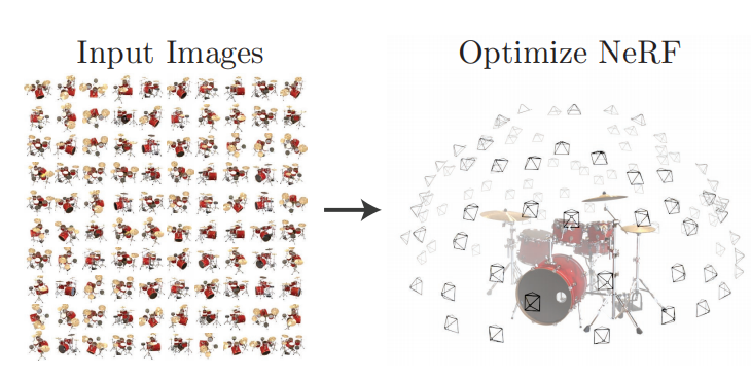
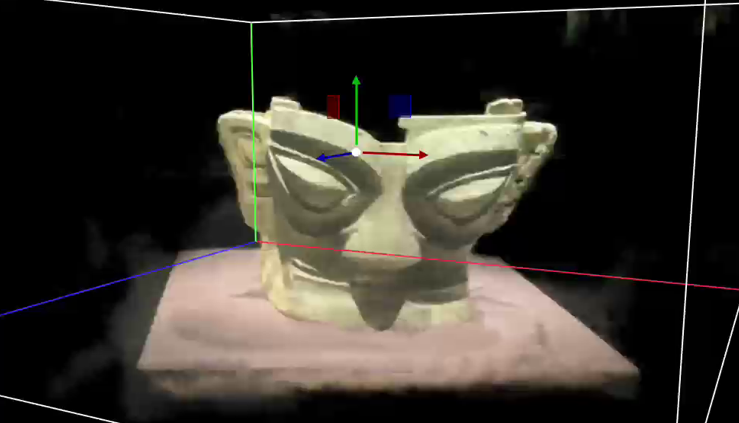

项目详情
古文物三维重建与数字化研究
项目简介
本项目利用 FFmpeg、Colmap 及开源 Instant-NGP 模型，对上海大学展出的青铜文物进行三维重建与数字化处理，生成高精度三维模型。



技术栈
工具：FFmpeg、Colmap、Instant-NGP
语言：Python
主要职责
- 使用大疆 Mobile SE 设备采集上海大学青铜展文物的环绕视频素材。
- 使用 FFmpeg 提取图像帧，并通过 Colmap 计算相机位姿与变换矩阵。
- 将处理后的数据送入 Instant-NGP，完成文物三维重建。
- 对生成结果进行后处理，输出标准 OBJ 格式模型。